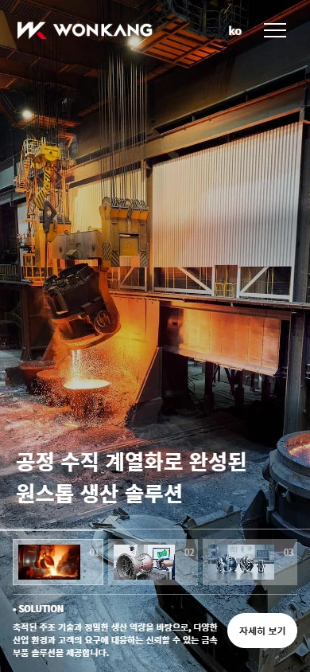
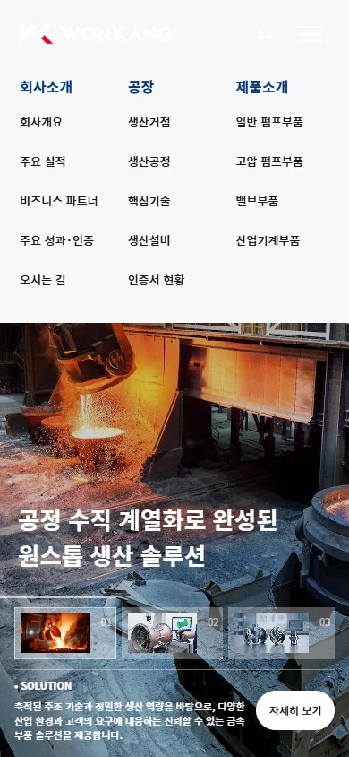

원강금속 리뉴얼 구현 보고서
작성일: 2026-10-29 (한국 시간)
고정 내비게이션 수정: 스크롤해도 상단 메뉴가 계속 보이도록 고정했습니다. 스크롤 후 배경·글자·로고를 전환하고, 메뉴 이동 위치와 스크롤 카드가 헤더에 가리지 않도록 높이를 반영했습니다. PC·모바일 스크롤, 하위 메뉴, 직접 앵커 접속과 새로고침을 확인했습니다.
반응형 오류 수정: 메뉴의 호버·클릭 충돌, 작은 창의 메뉴 접근, 긴 인증서 팝업의 닫기 버튼을 수정했습니다. CI 소개·생산거점은 사용자 결정에 따라 임시 경로만 연결하고 상세 구현은 보류했습니다. 수정 결과와 보류 항목을 확인할 수 있습니다.
HTML 정리·메뉴 정렬: 주 메뉴와 하위 메뉴를 같은 그룹·그리드로 통합하고, 제목 구조·불필요한 래퍼·인라인 값·코드 형식을 정리했습니다. 구조 평가와 수정 결과에서 확인할 수 있습니다.
추가 요청 반영: 사업 소개를 스크롤 카드로 복원하고, CTA 4개의 호버 버튼과 일정 간격의 좌우 교차·위로 등장하는 갤러리를 적용했습니다. 최신 인터랙션 수정 결과와 화면을 먼저 확인해 주세요. 아래 높이 대조표와 기존 전체 캡처는 최초 정적 구현 단계의 기록입니다.
30초 요약
피그마의 전체 메인페이지를 기준으로 누락된 하단 구역까지 구현했습니다. PC 원본의 구성·색상·사진·간격을 유지하고 모바일에서도 읽고 조작할 수 있도록 조정했습니다.
- 구현: 헤더·히어로, 사업 소개 3개, 실적, 제품 4개, 공정 사진 8개, 인증서 11개, 협력사 12개, 푸터.
- 원본 자산: 피그마 이미지·SVG 58개를 모두 로컬에 저장하고 실제 코드에서 사용했습니다.
- 검증: 360·390·768·1024·1440·1920px, 이미지 로드 및 페이지 가로 넘침·JS 오류 검사 통과.
- 기능: 메뉴, 히어로 전환, 제품 상세, 이메일·전화 문의, 인증서 선택·확대, 맨 위로 이동.
- 추가 자료: 실제 카탈로그 파일과 정식 개인정보 취급방침 원문이 필요합니다. 해당 버튼에는 현재 요청·안내 화면을 연결했습니다.
사이트 열기 · 그림이 포함된 보고서 · PC 전체 캡처 · 모바일 전체 캡처


작업 기준과 범위
- 피그마: 원강금속 웹사이트, 프레임 33:43.
- 링크의 0:1 페이지에는 다른 히어로 시안도 있어, 전체 페이지로 묶인 1920 × 14178.21px 프레임을 기준으로 삼았습니다.
- 저장소: ajrwkvkqzhs/first_class, 기준 커밋 e72d390.
- 작업 브랜치: codex/wonkang-figma-renewal.
- 기존 HTML/CSS, 공통 reset, 로컬 폰트, Swiper를 재사용했습니다. 실행용 프레임워크나 새 UI 라이브러리를 추가하지 않았습니다.
- 변경 범위는 wonkang 메인페이지, 추가 Light 폰트, 검증 스크립트와 보고서입니다. 다른 브랜드 화면과 study 폴더의 작업 파일은 수정하지 않았습니다.
무엇을 구현했는가
| 구역 | 구현 결과 |
|---|---|
| --- | --- |
| 헤더·히어로 | PC 80px·모바일 76px 고정 헤더, 최상단 투명·스크롤 후 밝은 배경 전환, 원본 주조 사진, 72px 제목, 3개 썸네일과 SOLUTION 안내 |
| 사업 소개 | 흰색·회색·파란색 카드 3개가 순서대로 겹치는 스크롤 카드와 번호 이동 |
| 실적 | 공장 원본 사진과 75% 암전, 1988 / 359.9억 / 1,000t, 기존 숫자 애니메이션 유지 |
| 대표 제품 | 사진 4분할, 호버하면 상세·고객문의·카탈로그 표시, 키보드·터치 대응 |
| 생산·기술 | 원본 사진 8개, 일정한 간격의 좌우 교차 배치, 아래에서 위로 등장 |
| 인증서 | 11개 원본, 특허증이 펼쳐진 초기 배치, 방향키 선택과 전체 이미지 확대 |
| 협력사 | 실제 로고 12개, PC 4열 3행 / 모바일 2열 |
| 푸터 | 원본 곡선 배경·패널·로고, 사업장 정보·전화·메일·메뉴·TOP 버튼 |
디자인 대조 결과 · 최초 정적 구현 기록
최초 정적 구현 단계의 1920px 폭에서 피그마의 섹션 높이와 브라우저의 실제 높이를 비교한 기록입니다. 이후 사용자 요청으로 스크롤 카드와 일정 간격의 좌우 교차 배치를 적용하여 현재 페이지 높이는 이 표와 다릅니다. 아래 값은 이미지 유사도 점수가 아닙니다.
| 구역 | 피그마 높이(px) | 구현 높이(px) |
|---|---|---|
| --- | ---: | ---: |
| 히어로 | 920 | 920 |
| 사업 소개 3개 합계 | 1198.21 | 1198.20 |
| 실적 | 1002 | 1002 |
| 제품 | 920 | 920 |
| 생산·기술 | 6979 | 6978.97 |
| 인증서 | 1087 | 1087 |
| 협력사 | 1200 | 1200 |
| 푸터 | 872 | 871.97 |
구현 화면을 직접 캡처해 사진 위치·비율, 로고, 텍스트, 배치를 검토했습니다. 피그마 전체 스크린샷과 상세 레이어 데이터는 확보했습니다. 추가 고해상도 스크린샷 조회는 Figma Starter MCP 호출 한도로 제한되어, 고해상도 원본과의 자동 픽셀 비교는 수행하지 못했습니다.
판단해서 적용한 개선
- 모바일 재배치: PC를 그대로 축소하면 글자가 너무 작아져, 600px 이하에서 사업·제품·공정은 1열, 로고는 2열로 배치했습니다. 인증서는 가로로 넘기며 전체 종이를 볼 수 있습니다.
- 실제로 반응하는 버튼: 클릭 효과만 있던 메뉴와 제품 버튼을 섹션 이동과 제품 상세로 연결했습니다. 문의는 피그마에 기재된 영업소 메일·전화로 연결합니다.
- 접근성: 본문 바로가기, 버튼 이름, 메뉴 열림 상태, 인증서 키보드 선택, 팝업의 Escape·닫기·포커스 복귀를 적용했습니다.
- 안정적인 자산: 임시 외부 이미지와 누락된 fallback 경로를 제거하고 피그마 원본을 로컬에서 불러옵니다. 원본 SVG의 내부 경로와 크기 속성은 수정하지 않았습니다.
- 타이포그래피: 기존 Noto Sans KR Regular·Medium·Bold를 재사용하고 Light를 추가해 공정 갤러리의 얇은 영문 글씨를 맞췄습니다.
- 작은 문구 정리: 명백한 오타인 ‘요굳회는’, ‘급속 소재’, ‘PRECISON’을 ‘요구되는’, ‘금속 소재’, ‘PRECISION’으로 정리했습니다. 별도 뉴스 페이지가 없는 메인 범위에서 ‘회사 소식’은 ‘주요 실적’ 또는 ‘주요 성과·인증’으로 연결했습니다.
검증 결과
검증 환경: Windows의 Microsoft Edge(Chromium), Playwright 브라우저 자동화.
| 화면 폭 | 이미지 누락 | 가로 넘침 | JS 오류 | 리소스 HTTP 오류 |
|---|---|---|---|---|
| --- | ---: | ---: | ---: | ---: |
| 360px | 0 | 0 | 0 | 0 |
| 390px | 0 | 0 | 0 | 0 |
| 768px | 0 | 0 | 0 | 0 |
| 1024px | 0 | 0 | 0 | 0 |
| 1440px | 0 | 0 | 0 | 0 |
| 1920px | 0 | 0 | 0 | 0 |
- 데스크톱 메뉴 hover·Escape, 모바일 메뉴 열기·섹션 이동·닫기 확인.
- 히어로 3개 썸네일 전환과 전환 후 제목 유지 확인.
- 제품 상세 4개, 문의 링크, 닫은 후 원래 버튼으로 포커스 복귀 확인.
- 인증서 선택·방향키·Home·End·확대 확인.
- 모션 감소 설정에서 고정 숫자 유지, 일반 모션에서 숫자 애니메이션 확인.
- JS 비활성화 상태에서도 본문·실적·공정 사진·협력사 콘텐츠 유지 확인.
- 로컬 자산 58개 모두 비어 있지 않은 파일이며 실제 코드의 호출 위치 확인.
- 주요 정적 이미지의 표시 크기·비율·크롭을 확인하고 PC·모바일 캡처를 저장했습니다.
- 실제 iPhone/Safari와 서버에서 문의를 접수하는 기능은 이번 검증 범위에 포함되지 않습니다.
기계 판독용 검증 결과 · 자산 대응표 · 재실행 스크립트
추가 자료 및 남은 운영 연결
- 카탈로그: 원본 파일이 없어 다운로드를 가장하지 않고 요청 안내와 이메일·전화 연결을 제공했습니다.
- 개인정보 취급방침: 정식 원문을 제공받지 않아 임의의 정책을 만들지 않고 문의 안내를 제공합니다.
- 실적·인증서·제품 문구: 피그마에 담긴 자료를 유지했습니다. 회사의 최신 수치, 인증 유효성, 제품 설명의 사실 여부를 별도로 확인한 것은 아닙니다.
- 하위 페이지: 이번 디자인은 메인페이지입니다. 메뉴는 메인의 관련 구역으로 연결하고 제품은 상세 팝업을 제공합니다. 회사 연혁·뉴스·CI 가이드 같은 별도 상세 페이지는 제작 범위에 포함하지 않았습니다.
- 배포: 최초 구현 PR #3을 main에 병합해 GitHub Pages에 배포했습니다. 공개 사이트에서 확인할 수 있습니다. 이후 인터랙션 요청은 같은 사이트에 이어서 반영합니다.
파일 안내
- 사이트: wonkang/index.html
- 스타일: wonkang/css/main.css
- 동작: wonkang/js/main.js
- 원본 자산: wonkang/img/figma/
- 보고서: wonkang/reports/renewal-report.html 및 renewal-report.md
- 재검증: wonkang/tests/smoke.cjs
- 추가 폰트: font/NotoSansKR-Light.woff2 (기존 font/OFL-NotoSansKR.txt 라이선스 참조)
구현 화면 보기
각 이미지를 누르면 원본 크기로 열립니다.




